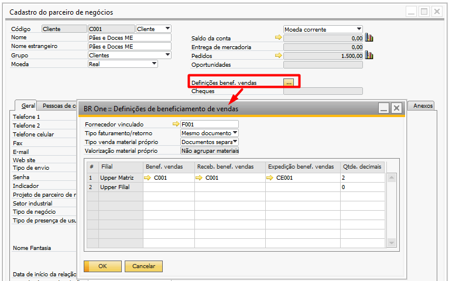

Parceiro de Negócios
Utilize o caminho abaixo para acessar a tela:
Parceiro de Negócios -> Cadastro de parceiros de negócio
Na tela Cadastro de Parceiro de Negócios do tipo Cliente que será utilizado no processo de Beneficiamento de Vendas, deverá ser preenchido as informações no cabeçalho no campo Definições benef. vendas, sendo eles:
{kind=link}
Fornecedor vinculado: Fornecedor cadastrado para o cliente que será utilizado no processo. Será listado o fornecedor que contenha o mesmo CNPJ.
Tipo faturamento/retorno: Informar se irá utilizar o mesmo documento ou documentos separados no processo.
Nenhum: Não entra como cliente de prestação de serviço.
Documentos Separados: A devolução dos componentes de terceiros ocorrerá por meio de um documento de Dev. de NF de Entrada e o item pai da ordem de produção será encaminhado pela NF de Saída;
Mesmo documento: A devolução dos componentes de terceiros será realizada junto com o item pai da ordem de produção pelo documento NF de Saída.
Tipo venda material próprio: Informar se irá utilizar o mesmo documento ou documentos separados para o componente próprio.
Nenhum: Não utiliza componente próprio no processo de beneficiamento de venda.
Documentos Separados: O envio do componente próprio será realizada pelo documento NF de Saída e o item pai da ordem de produção será encaminhado em outra NF de Saída;
Mesmo documento: O envio do componente próprio será realizada pelo documento NF de Saída, junto com o item pai da ordem de produção.
Valorização material próprio: Definição de como tratar componente próprio utilizado no processo.
Nenhum: Não entra como cliente de prestação de serviço.
Não agrupar materiais no serviço: Os componentes próprios serão incluídos no documento de NF de Saída e serão cobrados em uma linha separada do item pai da ordem de produção.
Ocultar materiais e agrupar valor do serviço: Os componentes próprios não serão levados na NF de Saída, porém, seu valor será agregado ao valor do preço do item pai da ordem de produção.
Não cobrar valor dos materiais: Os componentes próprios não serão levados em nenhum documento e nem seus valores agregados ao valor do item pai da ordem de produção.
Depósitos utilizados no processo definidos por filial:
Benef. vendas: Deve ser informado um depósito de terceiro em minha propriedade. Este depósito será utilizado nas linhas do roteiro/ordem de produção para os componentes de terceiros.
Receb. benef. vendas: Deve ser informado um depósito de terceiro em minha propriedade. Este depósito será utilizado nos documentos de nota fiscal de entrada para os componentes de terceiros.
Expedição benef. vendas: Deve ser informado um depósito de terceiro em minha propriedade. Este depósito será utilizado em Para depósito ao realizar uma saída de insumos dentro da OP na transferência de estoque dos componentes de terceiros.
Quantidade decimais
O campo Qtde deciamis permite definir o número de casas decimais que serão utilizadas para arredondamento nas Etapas 2 e 3 do Assistente de Faturamento e Retorno.
Funcionamento Padrão:
Valor 0: Quando Qtde. Decimais está configurado como 0, os campos Qtde Retorno NF (Etapa 2) e Qtde a Faturar (Etapa 3) seguem a quantidade de casas decimais configuradas nas Configurações Gerais do SAP (Quantidade).
Arredondamento:
Valor maior que 0: Se Qtde. Decimais for maior que 0, o add-on arredonda os campos Qtde Retorno NF (Etapa 2) e Qtde a Faturar (Etapa 3) de acordo com o número de casas decimais.
Exemplo:
Configurações gerais do SAP: 4 casas decimais (por exemplo, 123,4567).
Campo Qtde. Decimais: 2 casas decimais.
Resultado arredondado: 123,4600.
Isso significa que, na Etapa 2 e 3, a segunda casa decimal será arredondada e o restante será preenchido com 0 (dependendo da quantidade de casas decimais na consulta SAP).
Atenção: Caso a empresa utilize o processo de qualidade e os componentes de terceiro estejam configurados para gerar ficha de análise na nota fiscal de entrada, é necessário que os depósitos de Benef. Vendas e Receb. benef. Vendas sejam diferentes, isso porque primeiro o componente entrará em um depósito para a inspeção (Receb. benef. Vendas) e terá a sua ficha de análise criada. Após a aprovação da ficha com este componente, ele será transferido para o depósito de Benef. Vendas para que possa ser utilizado na OP. Para isso é necessário que exista também uma configuração correta do Destino de qualidade onde o Depósito aprovado seja o depósito de Benef. Vendas.
Caso o cliente não utilize o processo de qualidade e não gere fichas de análise para os componentes na nota fiscal de entrada, é necessário que o mesmo depósito seja definido para os campos Benef. Vendas e Receb. benef. vendas.